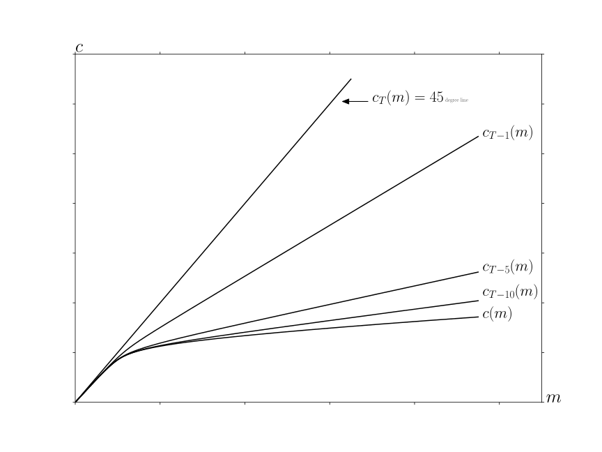
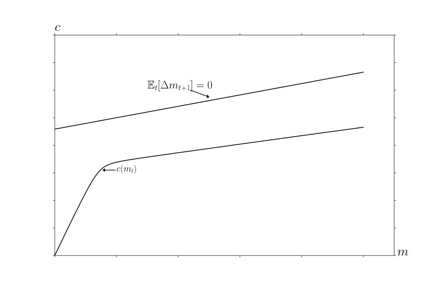
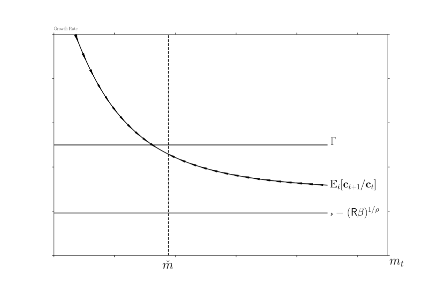
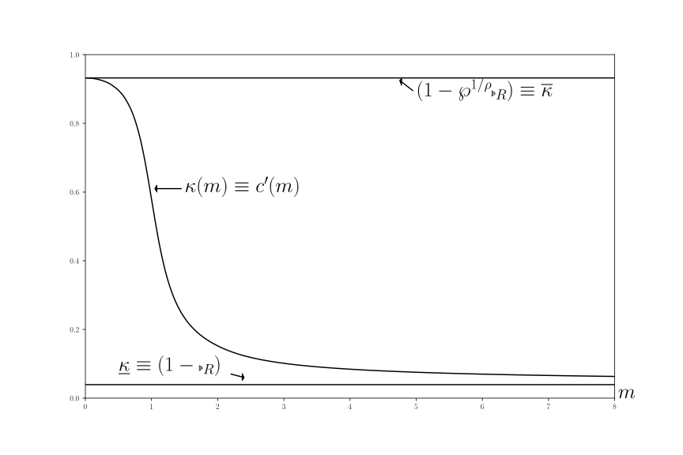
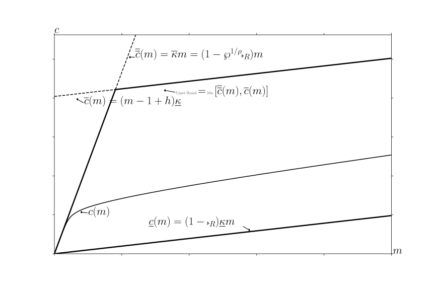
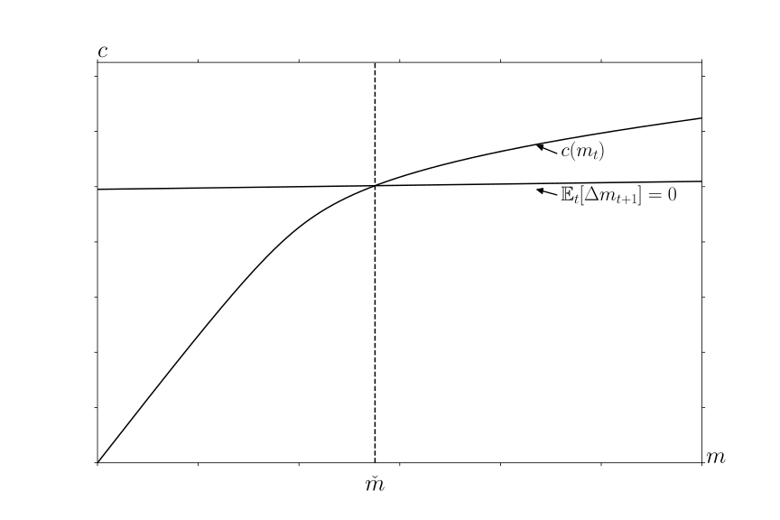

Abstract This paper builds theoretical foundations for rigorous and intuitive understanding of ‘buffer stock’saving models, pairing each theoretical result with a quantitative exploration. After describingconditions under which the consumption function exists, the paper shows that a ‘target’ bufferstock exists only under conditions strictly stronger than those that guarantee convergenceof the consumption and value functions. It also shows that the average growth rate ofconsumption equals the average growth rate of permanent income (in a small open economypopulated by buffer stock savers). Together, the (provided) numerical tools and (proven)analytical results constitute a comprehensive toolkit for understanding buffer stock models.
Keywords
Precautionary saving, buffer stock saving, marginal propensity
to consume, permanent income hypothesis
The dashboardwill launch a live interactive Jupyter Notebookthat uses the Econ-ARK/HARKtoolkit to produce all of the paper’s figures (warning: the dashboard may take several minutes tolaunch).
In the presence of empirically realistic transitory and permanent shocks to income a laFriedman (1957), only one other ingredient is required to define a testable model of
optimal consumption: A description of preferences. Modelers usually assume geometric
discounting of a constant relative risk aversion (CRRA) utility function, because,
starting with Zeldes (1989), a large literature has shown that models of this kind
have quantitative predictions that can match microeconomic evidence reasonably
well.
A companion theoretical literature has shown that standard numerical solution methods
provide good approximations to limiting “true” mathematical solutions – but only
for models more complex than the simple case with just shocks and utility. The
extra complexity has been required because standard contraction mapping theorems
(beginning with Bellman (1957) and including those following Stokey et. al. (1989))
cannot be applied when the utility function is unbounded (like CRRA - see section
2.1).2
This paper’s first technical contribution is to articulate the (surprisingly loose) conditions
under which the simple problem (without convenient shortcuts like a consumption floor or
liquidity constraints) defines a contraction mapping with a nondegenerate consumption
function (the main requirement is a ‘Finite Value of Autarky’ condition). Another
contribution is to specify the conditions under which the resulting consumption function
implies there is a ‘target’ wealth-to-permanent-income ratio (so the model exhibits
‘buffer stock’ saving behavior.) The key requirement for existence of a target is
that the model’s parameters satisfy a “Growth Impatience Condition” (equation
(24)) that relates preferences and uncertainty to the predictable growth rate of
income.
Even without a formal proof, target saving of this kind has been intuitively understood to
underlie central numerical results from the heterogeneous agent macroeconomics literature; for
example, the logic of target saving is central to the explanation by Krueger, Mitman, and
Perri (2016) of the fact that, during the Great Recession, middle-class consumers cut their
consumption more than the poor or the rich. The theoretical logic articulated below explains
this finding: Learning that the future has become more uncertain does not change the urgent
imperatives of the poor (their high ) because they have little room to maneuver.
Increased labor income uncertainty does not change the behavior of the rich because the
increase in uncertainty does not threaten their consumption much. Only people in the
middle have both the motivation and the wiggle-room to reduce their discretionary
spending.
Conveniently, elements required for the convergence proof turn out to provide analytical
foundations for many other results that have become familiar from the numerical literature.
All theoretical conclusions are paired with numerically computed illustrations (using an
open-source toolkit available from the Econ-ARK project). All of the insights of
this paper are instantiated in the toolkit, which algorithmically flags parametric
choices under which a problem fails to define a contraction mapping, under which
a target level of wealth does not exist, or under which the solution is otherwise
degenerate.
Thus, the theoretical foundations provided here are valuable both because they provide
intuition about the determinants of saving targets, and because they make it easier to develop
reliable numerical solution methods (by providing tight restrictions that valid solutions must
satisfy).
The paper proceeds in three parts.
The first part articulates the conditions required for the problem to define a unique
nondegenerate limiting consumption function, and discusses the relation of the paper’s model
to models previously considered in the literature. The required conditions are interestingly
parallel to those required for the liquidity constrained perfect foresight model; that
parallel is explored and explained. Next, the paper derives some limiting properties
of the consumption function as cash approaches infinity and as it approaches its
lower bound, and the theorem is proven explaining when the problem defines a
contraction mapping. Finally, a related class of commonly-used models (exemplified by
Deaton (1991)) is shown to constitute a particular limit of this paper’s more general
model.
The next section examines five key properties of the model. First, as cash approaches
infinity the expected growth rate of consumption and the marginal propensity to consume
(MPC) converge to their values in the perfect foresight case. Second, as cash approaches zero
the expected growth rate of consumption approaches infinity, and the MPC approaches
a simple analytical limit. Third, if the consumer is ‘growth impatient,’ a unique
target cash-to-permanent-income ratio will exist. Fourth, at the target cash ratio, the
expected growth rate of consumption is slightly less than the expected growth rate of
permanent noncapital income. Finally, the expected growth rate of consumption is
declining in the level of cash. The first four propositions are proven under general
assumptions about parameter values; the last is shown to hold if there are no transitory
shocks, but may fail in extreme cases if there are both transitory and permanent
shocks.
Szeidl (2012) has shown that such an economy will be characterized by stable
invariant distributions for the consumption ratio, the wealth ratio, and other
variables.3
Using Szeidl’s result, the final section discusses conditions under which, even with a fixed
aggregate interest rate that differs from the time preference rate, an economy populated by
buffer stock consumers converges to a balanced growth equilibrium in which the
growth rate of consumption tends toward the (exogenous) growth rate of permanent
income.
2 The Problem
2.1 Setup
The consumer solves an optimization problem from period until the end of life at
defined by the objective
(1)
where
(2)
is a constant relative risk aversion utility function with
.45
The consumer’s initial condition is defined by market resources (which Deaton (1991)
called ‘cash-on-hand’) and permanent noncapital income .
In the usual treatment, a dynamic budget constraint (DBC) simultaneously incorporates all
of the elements that determine next period’s given this period’s choices; but for the
detailed analysis here, it will be useful to disarticulate the steps so that individual ingredients
can be separately examined:
where indicates the consumer’s assets at the end of period
, which grow by a fixed interest factor between
periods,6
so that is the consumer’s financial (‘bank’) balances before next period’s consumption
choice;7
(‘market resources’ or ‘money’) is the sum of financial wealth and
noncapital income (permanent noncapital income multiplied by a
mean-one iid transitory income shock factor ; future transitory shocks are
assumed to satisfy ). Permanent noncapital income in period
is equal to its previous value, multiplied by a growth factor , modified
by a mean-one iid shock , satisfying for
where is the degenerate case with no permanent
shocks.89
In future periods there is a small probability that income will be zero (a
‘zero-income event’),
(3)
where is an iid mean-one random variable () that has a
distribution satisfying where (degenerately ). (See
Rabault (2002) and Li and Stachurski (2014) for analyses of cases where the shock processes
have unbounded support). Call the cumulative distribution functions and (and
is derived trivially from (3) and ). Permanent income and cash start out
strictly positive, , and as usual the consumer cannot die in debt,
so
(4)
The model looks more special than it is. In particular, the assumption of a
positive probability of zero-income events may seem objectionable. However, it is
easy to show that a model with a nonzero minimum value of (motivated,
for example, by the existence of unemployment insurance) can be redefined by
capitalizing the present discounted value of minimum income into current market
assets,10
analytically transforming that model back into the model analyzed here. Also, the assumption
of a positive point mass (as opposed to positive density) for the worst realization of the
transitory shock is inessential, but simplifies the proofs and is a powerful aid to
intuition.11
This model differs from Bewley’s (1977) classic formulation in several ways. The CRRA
utility function does not satisfy Bewley’s assumption that is well defined, or that
is well defined and finite, so neither the value function nor the marginal value
function will be bounded. It differs from Schectman and Escudero (1977) in that they
impose liquidity constraints and positive minimum income. It differs from both of
these in that it permits permanent growth in income, and also permanent shocks to
income, which a large empirical literature finds are quantitatively important in micro
data12
and which since Friedman (1957) have been understood to be far more consequential for
household welfare than are transitory fluctuations. It differs from Deaton (1991) because
liquidity constraints are absent; there are separate transitory and permanent shocks (a laMuth (1960)); and the transitory shocks here can occasionally cause income to reach
zero.13
Finally, it differs from models found in Stokey et. al. (1989) because
neither liquidity constraints nor bounds on utility or marginal utility are
imposed.14Alvarez and Stokey (1998) relaxed the bounds on the return function, but they address only
the deterministic case.
We establish a bit more notation by reviewing the standard result that in problems of this
class (CRRA utility, permanent shocks) the number of relevant state variables can be reduced
from two ( and ) to one . Defining nonbold variables as the
boldface counterpart normalized by (as with just above), assume that value in
the last period of life is , and consider the problem in the second-to-last
period,
where the last line follows because for the CRRA utility function in (2), .
Now, in a one-time deviation from the notational convention established in the last
paragraph, define nonbold ‘normalized value’ not as but as , because this
allows us to use the related problem
where is a ‘growth-normalized’ return factor, and the problem’s first order
condition is
This logic induces to all earlier periods, so that if we solve the normalized one-state-variable
problem specified in (5) we will have solutions to the original problem for any
from:
2.3 Definition of a Nondegenerate Solution
We say that this problem has a nondegenerate solution if, as the number of remaining periods
of life gets arbitrarily large, it defines a unique limiting consumption function which
satisfies
(6)
for every (‘Degenerate’ limits will be cases where the limiting consumption
function is either or .)
2.4 Perfect Foresight Benchmarks
Articulating the familiar analytical solution to the perfect foresight specialization
of the model, obtained by setting and , allows us to
define some remaining notation and terminology, and to define a convenient reference
point.
2.4.1 Human Wealth
The dynamic budget constraint, strictly positive marginal utility, and the can’t-die-in-debt
condition (4) imply an exactly-holding intertemporal budget constraint (IBC)
(7)
where is nonhuman wealth and is ‘human wealth,’ and with a constant
,
Equation (8) makes plain that in order for to be finite, we must impose the
Finite Human Wealth Condition (‘FHWC’)
(8)
Intuitively, for human wealth to be finite, the growth rate of (noncapital) income must be
smaller than the interest rate at which that income is being discounted.
2.4.2 Unconstrained Solution
The consumption Euler equation holds in every period; with , this
says
(9)
where the Old English letter ‘thorn’ represents what we will call the ‘absolute patience factor’
.15
The sense in which captures patience is that if the ‘absolute impatience condition’ (AIC)
holds,
(10)
the consumer will choose to spend an amount too large to sustain indefinitely (the level of
consumption must fall over time). We call such a consumer ‘absolutely impatient’ (this is the
key condition in Bewley (1977)).
We next define a ‘return patience factor’ that relates absolute patience to the return
factor:
(11)
and note that since consumption is growing by but discounted by :
which defines a normalized finite-horizon perfect foresight consumption function
(13)
where is the marginal propensity to consume (MPC) because it answers the question ‘if
the consumer had an extra unit of wealth, how much more would he spend.’ (The overbar on
reflects the fact that this will be an upper bound as we modify the problem to incorporate
constraints and uncertainty; analogously, the underbar for indicates that it is a lower
bound). Equation (12) makes plain that for the limiting MPC to be strictly positive
as goes to infinity we must impose the Return Impatience Condition:
condition
(14)
so that
(15)
Equation (14) thus imposes a second kind of ‘impatience:’ The consumer cannot be so
pathologically patient as to wish, in the limit as the horizon approaches infinity, to spend
nothing today out of an increase in current wealth; that is, the condition rules out the
degenerate limiting solution . Because the return patience factor is the
absolute patience factor divided by the return, we call equation (14) the ‘return impatience
condition’ or RIC; we will say that a consumer who satisfies the condition is ‘return
impatient.’
Given that the RIC holds, and defining limiting objects by the absence of a time
subscript (e.g., ), the limiting consumption function will
be
(16)
and we now see that in order to rule out the degenerate limiting solution we need
to be finite so we must impose the finite human wealth condition (8).
A final useful point is that since the perfect foresight growth factor for consumption is ,
again using , yields an analytical expression for value:
which asymptotes to a finite number as approaches if
(related to a condition in Alvarez and Stokey (1998)); with
a bit of algebra, this requirement can be shown to be equivalent to the
RIC.16
Thus, the same conditions that guarantee a nondegenerate limiting consumption function also
guarantee a nondegenerate limiting value function (which will not be true in the version of the
model that incorporates uncertainty).
2.4.3 Constrained Solution
If a liquidity constraint requiring is ever to be relevant, it must be relevant at the
lowest possible level of market resources, , which obtains for a consumer who enters
period with . The constraint is ‘relevant’ if it prevents the choice that would
otherwise be optimal; at the constraint is relevant if the marginal utility from
spending all of today’s resources , exceeds the marginal utility from doing the
same thing next period, ; that is, if such choices would violate the Euler equation
(5):
(17)
By analogy to the return patience factor, we therefore define a ‘perfect foresight growth
patience factor’ as
(18)
and define a ‘perfect foresight growth impatience condition’ (PF-GIC)
(19)
which is equivalent to (17) (exponentiate both sides by ).
If the RIC and the FHWC hold, appendix A shows that, for some , an
unconstrained consumer behaving according to (16) would choose for all .
The solution to the constrained consumer’s problem in this case is simple: For any
the constraint does not bind (and will never bind in the future) and so the constrained
consumption function is identical to the unconstrained one. If the consumer were
somehow17
to arrive at an the constraint would bind and the consumer would have to
consume . We use the accent to designate the limiting constrained consumption
function:
(20)
More useful is the case where the perfect foresight growth and return impatience conditions
both hold. In this case appendix A shows that the limiting constrained consumption function
is piecewise linear, with up to a first ‘kink point’ at , and with discrete
declines in the MPC at successively increasing kink points . As the
constrained consumption function becomes arbitrarily close to the unconstrained
, and the marginal propensity to consume function limits to .
Similarly, the value function is nondegenerate and limits into the value function of the
unconstrained consumer. Surprisingly, this logic holds even when the finite human
wealth condition fails (denoted ). A solution exists because the constraint
prevents the consumer from borrowing against infinite human wealth to finance infinite
current consumption. Under these circumstances, the consumer who starts with any
amount of resources will, over time, run those resources down so that by some
finite number of periods in the future the consumer will reach , and
thereafter will set for eternity, a policy that will (using (17)) yield value of
which will be finite whenever
which we call the Perfect Foresight Finite Value of Autarky Condition, PF-FVAC, because it
guarantees that a consumer who always spends all his permanent income will have finite value
(the consumer has ‘finite autarky value’). Note that the version of the PF-FVAC in (21)
implies the PF-GIC whenever () holds. So, if , value for
any finite will be the sum of two finite numbers: The component due to the unconstrained
consumption choice made over the finite horizon leading up to , and the finite
component due to the value of consuming all income thereafter. The consumer’s value function
is therefore nondegenerate.
The most peculiar possibility occurs when the RIC fails. The appendix shows that under
these circumstances the FHWC must also fail, and the constrained consumption function
is nondegenerate. (See Figure 6 for a numerical example). While it is true that
, nevertheless the limiting constrained consumption function is
strictly positive and strictly increasing in . This result interestingly reconciles the
conflicting intuitions from the unconstrained case, where would suggest a
dengenerate limit of while would suggest a degenerate limit of
.
Tables 3 and 4 (and appendix table 5) codify the key points to help the reader keep them
straight (and to facilitate upcoming comparisons with the results in the presence of
uncertainty but the absence of liquidity constraints (also tabulated for comparison)). The
model without constraints but with uncertainty will turn out to be a close parallel to the
model with constraints but without uncertainty.
2.5 Uncertainty-Modified Conditions
2.5.1 Impatience
When uncertainty is introduced, the expectation of can be rewritten as:
(21)
where Jensen’s inequality guarantees that the expectation of the inverse of the permanent
shock is strictly greater than one. It will be convenient to define the object
because this permits us to write expressions like the RHS of (21) compactly as, e.g.,
18
We refer to this as the ‘compensated return,’ because it compensates (in a risk-neutral way)
for the effect of uncertainty on the expected growth-normalized return (in the sense implicitly
defined in (21)).
We can now transparently generalize the PF-GIC (19) by defining a ‘compensated growth
factor’
(22)
and a compensated Growth Patience Pactor (GPF):
(23)
and a straightforward derivation in (33) below yields the conclusion that
which implies that if we wish to prevent from heading to infinity (that is, if
we want to be guaranteed to be expected to fall for some large enough value
of ) we must impose a generalized version of the Perfect Foresight Growth
Impatience Conditon (19) which we call simply the ‘growth impatience condition’
(GIC):19
(24)
which is stronger than the perfect foresight version (19) because (Jensen’s inequality
implies that for nondegenerate ).
2.5.2 Autarky Value
Analogously to (17), a consumer who spent his permanent income every period would have
value determined by the product of the expectation of the (independent) future shocks to
permanent income:
which invites the definition of a utility-compensated equivalent of the permanent
shock,
which will satisfy for and nondegenerate (and for the preferred
(though not required) case of ); defining we can see that will be finite as
approaches if
which we call the ‘finite value of autarky’ condition (FVAC) because it guarantees that value
is finite for a consumer who always consumes the (now stochastic) permanent income. For
nondegenerate , this condition is stronger (harder to satisfy in the sense of requiring lower
) than the perfect foresight version (21) because .
where the last equation is the same as the PF-FVAC condition except that the RHS is
multiplied by which is strictly less than 1.
2.6 The Baseline Numerical Solution
Figure 1 depicts the successive consumption rules that apply in the last period of life
(), the second-to-last period, and various earlier periods under the baseline parameter
values listed in Table 2. (The 45 degree line is labelled as because in the last
period of life it is optimal to spend all remaining resources.)
Table 1:Microeconomic Model Calibration
Table 2:Model Characteristics Calculated from Parameters

Figure 1:Convergence of the Consumption Rules
In the figure, the consumption rules appear to converge as the horizon recedes (our purpose
is to show that this appearance is not deceptive); we call the limiting infinite-horizon
consumption rule
(25)
2.7 Concave Consumption Function Characteristics
A precondition for the main proof is that the maximization problem (5)
defines a sequence of continuously differentiable strictly increasing strictly
concave20 functions
.21
The straightforward but tedious proof is relegated to appendix B. For present purposes, the
most important point is the following intuition: for all periods
because a consumer who spent all available resources would arrive in period
with balances of zero, and then might earn zero noncapital income over
the remaining horizon (an unbroken series of zero-income events is unlikely but
possible). In such a case, the budget constraint and the can’t-die-in-debt condition
mean that the consumer would be forced to spend zero, incurring negative infinite
utility. To avoid this disaster, the consumer never spends everything. (This is an
example of the ‘natural borrowing constraint’ induced by a precautionary motive
(Zeldes (1989)).)22
2.8 Bounds for the Consumption Functions
The consumption functions depicted in Figure 1 appear to have limiting slopes as and
as . This section confirms that impression and derives those slopes, which also turn
out to be useful in the contraction mapping proof. Benhabib, Bisin, and Zhu (2015) show that
the consumption function becomes linear as wealth approaches infinity in a model with capital
income risk and liquidity constraints; their results should generalize to the limits
derived here if capital income risk were added to the model. Ma, Stachurski, and
Toda (2020) establish the existence and uniqueness of a solution to a general income
fluctuation problem with capital income risk in a Markovian setting and use such
a model to study the tail behavior of wealth in the presence of risky returns to
capital.
Assume (as discussed above) that a continuously differentiable concave consumption
function exists in period , with an origin at , a minimal MPC ,
and maximal MPC . (If these will be ; for earlier periods
they will exist by recursion from the following arguments.)
The MPC bound as wealth approaches infinity is easy to understand: In this case, under our
imposed assumption about finite human wealth, the proportion of consumption that will be
financed out of human wealth approaches zero. The consequence is that the proportional
difference between the solution to the model with uncertainty and the perfect foresight model
shrinks to zero.
In the course of proving this point, appendix F provides a useful recursive expression for
the (inverse of the) limiting MPC:
(26)
2.8.1 WeakRICConditions
It turns out that there is a parallel expression for the limiting maximal MPC as :
appendix equation (66) shows that, as ,
(27)
Then is a decreasing convergent sequence if the ‘weak return patience factor’
(28)
a condition that we dub the ‘Weak Return Impatience Condition’ (WRIC) because
with it will hold more easily (for a larger set of parameter values) than the
RIC ().
The essence of the argument is that as wealth approaches zero, the overriding consideration
that limits consumption is the (recursive) fear of the zero income events. (That
consideration is why the probability of the zero income event appears in the
expression.)
We are now in position to observe that the optimal consumption function must
satisfy
(29)
because consumption starts at zero and is continuously differentiable (as argued above), is
strictly concave (Carroll and Kimball (1996)), and always exhibits a slope between and
(the formal proof is provided in appendix D).
These limits are useful at least in the sense that they can be hard-wired into a solution
algorithm for the model, which has the potential to make the solution more efficient
(cf. Carroll, Chipeniuk, Tokuoka, and Wu (2020)). Alternatively, they can provide a
useful check on the accuracy of a solution algorithm that does not impose them
directly.
2.9 Conditions Under Which the Problem Defines a Contraction Mapping
To prove that the consumption rules converge, we need to show that the problem defines a
contraction mapping. This cannot be proven using the standard theorems in, say, Stokey
et. al. (1989), which require marginal utility to be bounded over the space of possible
values of , because the possibility (however unlikely) of an unbroken string of
zero-income events for the remainder of life means that as approaches zero
must approach zero (see the discussion in 2.7); thus, marginal utility is unbounded.
Although a recent literature examines the existence and uniqueness of solutions to
Bellman equations in the presence of ‘unbounded returns’ (see, e.g., Matkowski and
Nowak (2011)), the techniques in that literature cannot be used to solve the problem here
because the required conditions are violated by a problem that involves permanent
shocks.23
Fortunately, Boyd (1990) provided a weighted contraction mapping theorem that Alvarez
and Stokey (1998) showed how to address the homogeneous case (of which CRRA formulation
is an example) in a deterministic framework; Durán (2003) showed how to extend
Boyd (1990) approach to the stochastic case.
Definition 1.Consider any functionwhereis the space of continuousfunctions fromto. Supposewithand. Thenis-bounded if the-norm of,
(30)
is finite.
For defined as the set of functions in that are -bounded; ,
, , and as examples of -bounded functions; and using to
indicate the function that returns zero for any argument, Boyd (1990) proves the
following.
We can show that our operator satisfies the conditions that Boyd requires of his
operator , if we impose two restrictions on parameter values. The first restriction is the
WRIC necessary for convergence of the maximal MPC, equation (28) above. A more serious
restriction is the utility-compensated Finite Value of Autarky condition, equation (25).
(We discuss the interpretation of these restrictions in detail in section 2.11 below.)
Imposing these restrictions, we are now in position to state the central theorem of the
paper.
Theorem 1.is a contraction mapping if the restrictions on parameter values (28)
and (25) are true (that is, if the weak return impatience condition and the finite valueof autarky condition hold).
Intuitively, Boyd’s theorem shows that if you can find a that is everywhere finite but
goes to infinity ‘as fast or faster’ than the function you are normalizing with , the
normalized problem defines a contraction mapping. The intuition for the FVAC condition is
just that, with an infinite horizon, with any initial amount of bank balances , in the limit
your value can always be made greater than you would get by consuming all of your
permanent income and nothing else every period (say, by consuming for some
small ).
The details of the proof are cumbersome, and are therefore relegated to appendix D. Given
that the value function converges, appendix D.3 shows that the consumption functions
converge.
2.10 The Liquidity Constrained Solution as a Limit
This section shows that a related problem commonly considered in the literature (e.g., with a
simpler income process, by Deaton (1991)), with a liquidity constraint and a positive
minimum value of income, is the limit of the problem considered here as the probability of
the zero-income event approaches zero.
The essence of the argument is easy to state. As noted above, there is a finite
possibility of earning zero income over the remainder of the horizon, which prevents the
consumer from ending the current period with zero assets because with some finite
probability the consumer would be forced to consume zero, which would be infinitely
painful.
But the extent to which the consumer feels the need to make this precautionary provision
depends on the probability that it will turn out to matter. As , that probability
becomes arbitrarily small, so the amount of precautionary saving approaches zero. But zero
precautionary saving is the amount of saving that a liquidity constrained consumer with
perfect foresight would choose.
Another way to think about this is just to think of the liquidity constraint as being imposed
by specifying a component of the utility function that is zero whenever the consumer ends the
period with (weakly) positive assets, but negative infinity if the consumer ended the period
with (strictly) negative assets.
See appendix G for the formal proof justifying the foregoing intuitive discussion.
2.11 Discussion of Parametric Restrictions
2.11.1 The RIC
In the perfect foresight unconstrained problem (section 2.4.2), the RIC was required
for existence of a nondegenerate solution. It is surprising, therefore, that in the
presence of uncertainty, the RIC is neither necessary nor sufficient for a nondegenerate
solution.
We thus begin our discussion by asking what features the problem must exhibit (given the
FVAC) if the RIC fails (that is, :
but since and (because we have assumed ), this can hold only
if ; that is, given the FVAC, the RIC can fail only if human wealth is unbounded.
Unbounded human wealth is permitted here, as in the perfect foresight liquidity constrained
problem. But, from equation (26), an implication of is that . Thus,
interestingly, the presence of uncertainty both permits unlimited human wealth and at the
same time prevents that unlimited wealth from resulting in infinite consumption. That is, in
the presence of uncertainty, pathological patience (which in the perfect foresight model with
finite wealth results in consumption of zero) plus infinite human wealth (which the
perfect foresight model rules out because it leads to infinite consumption) combine
here to yield a unique finite limiting MPC for any finite value of . Note the
close parallel to the conclusion in the perfect foresight liquidity constrained model
in the {PF-GIC,} case (for detailed analysis of this case see the appendix).
There, too, the tension between infinite human wealth and pathological patience
was resolved with a nondegenerate consumption function whose limiting MPC was
zero.
2.11.2 The WRIC
The ‘weakness’ of the additional requirement for contraction, the weak RIC, can be seen by
asking ‘under what circumstances would the FVAC hold but the WRIC fail?’ Algebraically,
the requirement is
(32)
If there were no conceivable parameter values that could satisfy both of these inequalities,
the WRIC would have no force; it would be redundant. And if we require , the
WRIC is indeed redundant because now , so that the RIC (and WRIC) must
hold.
But neither theory nor evidence demands that we assume . We can therefore
approach the question of the WRIC’s relevance by asking just how low must be for the
condition to be relevant. Suppose for illustration that , ,
and . In that case (32) reduces to
but since by assumption, the binding requirement is that
so that for example if we would need (that is, a perpetual riskfree rate
of return of worse than -90 percent a year) in order for the WRIC to bind. Thus, the relevance
of the WRIC is indeed “Weak.”
Perhaps the best way of thinking about this is to note that the space of parameter
values for which the WRIC is relevant shrinks out of existence as , which
section 2.10 showed was the precise limiting condition under which behavior becomes
arbitrarily close to the liquidity constrained solution (in the absence of other risks). On
the other hand, when , the consumer has no noncapital income (so that
the FHWC holds) and with the WRIC is identical to the RIC; but the
RIC is the only condition required for a solution to exist for a perfect foresight
consumer with no noncapital income. Thus the WRIC forms a sort of ‘bridge’ between
the liquidity constrained and the unconstrained problems as moves from 0 to
1.
2.11.3 When the GIC Fails
If both the GIC and the RIC hold, the arguments above establish that the limiting
consumption function asymptotes to the consumption function for the perfect foresight
unconstrained function. The more interesting case is where the GIC fails.
A solution that satisfies the combination FVAC and is depicted in Figure 2. The
consumption function is shown along with the locus that identifies the
‘sustainable’ level of spending at which is expected to remain unchanged. The diagram
suggests a fact that is confirmed by deeper analysis: Under the depicted configuration of
parameter values (see the code for details), the consumption function never reaches the
locus; indeed, when the RIC holds but the GIC does not, the consumption
function’s limiting slope is shallower than that of the sustainable consumption locus
,27
so the gap between the two actually increases with in the limit. That is, although a
nondegenerate consumption function exists, a target level of does not (or, rather, the
target is ), because no matter how wealthy a consumer becomes, he will always spend
less than the amount that would keep stable (in expectation).

Figure 2:Example Solution when FVAC Holds but GIC Does Not
For the reader’s convenience, Tables 3 and 4 present a summary of the connections between
the various conditions in the presence and the absence of uncertainty.
Table 3:Definitions and Comparisons of Conditions
Table 4:Sufficient Conditions for Nondegenerate Solution
For feasible, the limiting consumption function defines the unique value ofsatisfying.RIC,FHWC are necessary as well as sufficient.Solution also exists forandRIC, but is identical to the unconstrained model’s solution for feasible.
3 Analysis of the Converged Consumption Function
Figures 3 and 4a,b capture the main properties of the converged consumption rule when the RIC, GIC, and
FHWC all hold.28
Figure 3 shows the expected consumption growth factor for a consumer
behaving according to the converged consumption rule, while Figures 4a,b illustrate
theoretical bounds for the consumption function and the marginal propensity to
consume.
Five features of behavior are captured, or suggested, by the figures. First, as the expected
consumption growth factor goes to , indicated by the lower bound in Figure 3, and the marginal
propensity to consume approaches (Figure 4), the same as the perfect foresight
MPC.29
Second, as the consumption growth factor approaches (Figure 3) and the
MPC approaches (Figure 4). Third (Figure 3), there is a target
cash-on-hand-to-income ratio such that if then , and (as
indicated by the arrows of motion on the curve), the model’s dynamics are
‘stable’ around the target in the sense that if then cash-on-hand will rise (in
expectation), while if , it will fall (in expectation). Fourth (Figure 3), at the
target , the expected rate of growth of consumption is slightly less than the
expected growth rate of permanent noncapital income. The final proposition suggested
by Figure 3 is that the expected consumption growth factor is declining in the
level of the cash-on-hand ratio . This turns out to be true in the absence of
permanent shocks, but in extreme cases it can be false if permanent shocks are
present.30

Figure 3:Target , Expected Consumption Growth, and Permanent Income Growth
3.1 Limits as
Define
which is the solution to an infinite-horizon problem with no noncapital income ();
clearly , since allowing the possibility of future noncapital income cannot reduce current
consumption.31
Assuming the FHWC holds, the infinite horizon perfect foresight solution (16) constitutes
an upper bound on consumption in the presence of uncertainty, since Carroll and
Kimball (1996) show that the introduction of uncertainty strictly decreases the level of
consumption at any .
Thus, we can write
But
so as , and the continuous differentiability and strict concavity of
therefore implies
because any other fixed limit would eventually lead to a level of consumption either exceeding
or lower than .
Figure 4 confirms these limits visually. The top plot shows the converged consumption
function along with its upper and lower bounds, while the lower plot shows the marginal
propensity to consume.

Figure 4:Limiting MPC’s

(a)Bounds

(b)Target
Figure 5:The Consumption Function
Next we establish the limit of the expected consumption growth factor as :
But
and
while
(33)
because 32
and which goes to zero as goes to infinity.
Hence we have
so as cash goes to infinity, consumption growth approaches its value in the perfect
foresight model.
This argument applies equally well to the problem of the restrained consumer,
because as approaches infinity the constraint becomes irrelevant (assuming the
FHWC holds).
3.2 Limits as
Now consider the limits of behavior as gets arbitrarily small.
Now using the continuous differentiability of the consumption function along with
L’Hôpital’s rule, we have
Figure 4 confirms that the numerical solution method obtains this limit for the MPC as
approaches zero.
For consumption growth, as we have
where the second-to-last line follows because is
positive, and the last line follows because the minimum possible realization of
is so the minimum possible value of expected next-period consumption is
positive.33
3.3 There Exists Exactly One Target Cash-on-Hand Ratio, which is Stable
We now prove the existence of a target cash-on-hand-to-income ratio towards which an
agent’s expects to move. (The accent is meant to invoke the fact that this is the value
that other ’s ‘point to.’) We state the necessary conditions for the existence of and its
properties in the following theorem.
Theorem 2.For the problem defined in section2.1, if the (24), and (28), ,then there exists a unique cash-on-hand-to-income ratiosuch that
(34)
Moreover,is stable in the sense that
The elements of the proof are:
Existence and continuity of
Existence of a point where
is monotonically decreasing
3.3.1 Existence and Continuity of .
The consumption function exists because we have imposed the conditions (the and
) that theorem 1 establishes are sufficient for its existence. (Indeed, Appendix C
shows that is not just continuous, but twice continuously differentiable.)
Section 2.7 shows that for all , . Since , even if
takes on its minimum value of 0, , since both and are strictly
positive under our foregoing assumptions. With , the ratio inherits
continuity (and, for that matter, continuous differentiability) from the consumption
function.
3.3.2 Existence of a point where .
Section 3.2 shows that , while the limit as goes to infinity
is
where the last two lines are merely a restatement of the GIC (24).
The Intermediate Value Theorem tells us that if is continuous, and takes on
values above and below 1, there must be at least one point at which it is equal to
one.
3.3.3 is monotonically decreasing.
Now define and note that
so that . Our goal is to prove that is strictly decreasing on
since
Note that the statement of theorem 2 did not require the RIC to hold. Now, we show that
(given our other assumptions) is decreasing (but for different reasons) whether the
RIC holds or fails ().
IfRICholds. We show elsewhere that if the RIC holds then so
that
which is negative because the GIC says .
IfRICfails. Under , recall that . Concavity of the consumption
function means that is a decreasing function, so everywhere
which means that from (35) is guaranteed to be negative if
(35)
But the combination of the GIC holding and the RIC failing can be written:
The foregoing arguments rely on the continuous differentiability of , so the arguments
do not directly go through for the restrained consumer’s problem in which the existence of
liquidity constraints can lead to discrete changes in the slope at particular values of
. But we can use the fact that the restrained model is the limit of the baseline model as
to conclude that there is likely a unique target cash level even in the restrained
model.
If consumers are sufficiently impatient, the limiting target level in the restrained model will
be . That is, if a consumer starting with will save nothing,
, then the target level of in the restrained model will be 1; if a consumer with
would choose to save something, then the target level of cash-on-hand will be greater
than the expected level of income.
3.4 Expected Consumption Growth at Target Is Less than Expected Permanent
Income Growth
In Figure 3 the intersection of the target cash-on-hand ratio locus at with the
expected consumption growth curve lies below the intersection with the horizontal line
representing the growth rate of expected permanent income. This can be proven as
follows.
Strict concavity of the consumption function implies that if
then
and since and it is clear that cov
which implies that the entire term added to in (36) is negative, as required.
3.5 Expected Consumption Growth Is a Declining Function of (or Is It?)
Figure 3 depicts the expected consumption growth factor as a strictly declining function of
the cash-on-hand ratio. To investigate this, define
and the proposition in which we are interested is
or differentiating through the expectations operator, what we want is
(36)
Henceforth indicating appropriate arguments by the corresponding subscript
(e.g. ), since , the portion of the LHS of equation (36) in
brackets can be manipulated to yield
Now differentiate the Euler equation with respect to :
but since we can see from (37) that (36) is equivalent to
The latter proposition is obviously true under our assumption . The former will be
true if
The two shocks cause two kinds of variation in . Variations due to satisfy the
proposition, since a higher draw of both reduces and reduces the marginal
propensity to consume. However, permanent shocks have conflicting effects. On the one hand,
a higher draw of will reduce , thus increasing both and . On the
other hand, the term is multiplied by , so the effect of a higher could be
to decrease the first term in the covariance, leading to a negative covariance with the
second term. (Analogously, a lower permanent shock can also lead a negative
correlation.)
The software archive associated with this paper presents an example in which this perverse
effect dominates. However, extreme assumptions were required (in particular, a very
small probability of the zero-income shock) and the region in which was
tiny. In practice, for plausible parametric choices, should generally
hold.
4 The Aggregate and Idiosyncratic Relationship Between Consumption Growth and
Income Growth
This section examines the behavior of large collections of buffer-stock consumers
with identical parameter values. Such a collection can be thought of as either
a subset of the population within a single country (say, members of a given
education or occupation group), or as the whole population in a small open
economy.35
Formally, we assume a continuum of ex ante identical households on the unit interval, with constant
total mass normalized to one and indexed by , all behaving according to the model specified
above.36
Szeidl (2012) proves that such a population will be characterized by an invariant distribution of
that induces invariant distributions for and ; designate these , , and
.37
4.1 Consumption and Income Growth at the Household Level
It is useful to define the operator which yields the mean value of its argument in the
population, as distinct from the expectations operator which represents beliefs about
the future.
An economist with a microeconomic dataset could calculate the average growth rate of
idiosyncratic consumption, and would find
where and the last equality follows because the invariance of (see Szeidl (2012)) means that
.38
Thus, in a population that has reached its invariant distribution, the growth rate of
idiosyncratic log consumption matches the growth rate of idiosyncratic log permanent
income.
4.2 Growth Rates of Aggregate Income and Consumption
Attanasio and Weber (1995) point out that concavity of the consumption function (or
other nonlinearities) can imply that it is quantitatively important to distinguish
between the growth rate of average consumption and the average growth rate of
consumption.39
We have just examined the average growth rate; we now examine the growth rate of the
average.
Using boldface capital letters for aggregate variables, the growth factor for aggregate income
is given by:
because of the independence assumptions we have made about and .
The growth factor for aggregate assets is:
where the second-to-last line follows from Szeidl (2012)’s proof the ergodicity
of the distributions of normalized variables for this problem, which implies that
.
Unfortunately, it is clear that the covariance term in the numerator, while generally small,
will not in general be zero. This is because the realization of the permanent shock has a
nonlinear effect on .
One way of thinking about this is that it reflects the fact that, under our assumptions, the
variable does not have an ergodic distribution; the distribution of permanent income
becomes forever wider and wider as time progress in this model.
There is a simple solution to that problem, however. In practice most modelers incorporate
a constant positive probability of death in their models, following Blanchard (1985). Carroll,
Slacalek, Tokuoka, and White (2017) show that for probabilities of death that exceed a
threshold that depends on the size of the permanent shocks, the distribution of permanent
income has a finite variance. In such cases, numerical results confirm the intuition that the
growth rate of aggregate assets ends up matching the growth rate of permanent
income.
Matters are simpler if there are no permanent shocks; see E for a proof that in that case the
growth rate of assets (and other variables) does eventually converge to the growth rate of
aggregate permanent income.
5 Conclusions
This paper provides theoretical foundations for many characteristics of buffer stock
saving models that have heretofore been observed in numerical solutions but not
proven. Perhaps the most important such proposition is the existence of a target
cash-to-permanent-income ratio toward which actual resources will move. The intuition
provided by the existence of such a target can be a powerful aid to understanding a host of
numerical results.
Another contribution is integration of the paper’s results with the open-source Econ-ARK
toolkit, which is used to generate all of the quantitative results of the paper, and which
integrally incorporates all of the analytical insights of the paper.
Appendices
A Perfect Foresight Liquidity Constrained Solution
Under perfect foresight in the presence of a liquidity constraint requiring , this
appendix taxonomizes the varieties of the limiting consumption function that arise
under various parametric conditions. Results are summarized in table 5.
Table 5:Taxonomy of Perfect Foresight Liquidity Constrained Model Outcomes
Conditions are applied from left to right; for example, the second row indicates conclusions in the case whereandRIC both hold, while the third row indicates that when thePF-GIC and theRIC bothfail, the consumption function is degenerate; the next row indicates that whenever thePF-GIC holds, theconstraint will bind in finite time.
A.1 If PF-GIC Fails
A consumer is ‘growth patient’ if the perfect foresight growth impatience condition
fails (, ). Under the constraint does not bind at the
lowest feasible value of because implies that spending
everything today (setting ) produces lower marginal utility than is
obtainable by reallocating a marginal unit of resources to the next period at return
:40
(37)
Similar logic shows that under these circumstances the constraint will never bind at
for a constrained consumer with a finite horizon of periods, so for such a
consumer’s consumption function will be the same as for the unconstrained case examined in
the main text.
If the RIC fails () while the finite human wealth condition holds, the limiting value
of this consumption function as is the degenerate function
(38)
(that is, consumption is zero for any level of human or nonhuman wealth).
If the RIC fails and the FHWC fails, human wealth limits to so the
consumption function limits to either or depending on the
relative speeds with which the MPC approaches zero and human wealth approaches
.41
Thus, the requirement that the consumption function be nondegenerate implies that for a
consumer satisfying we must impose the RIC (and the FHWC can be shown to be
a consequence of and RIC). In this case, the consumer’s optimal behavior is easy to
describe. We can calculate the point at which the unconstrained consumer would choose
from equation (16):
(39)
which (under these assumptions) satisfies
.42
For the unconstrained consumer would choose to consume more
than ; for such , the constrained consumer is obliged to choose
.43
For any the constraint will never bind and the consumer will choose to spend the
same amount as the unconstrained consumer, .
(Stachurski and Toda (2019) obtain a similar lower bound on consumption and use it to
study the tail behavior of the wealth distribution.)
A.2 If PF-GIC Holds
Imposition of the PF-GIC reverses the inequality in (37), and thus reverses the conclusion: A
consumer who starts with will desire to consume more than 1. Such a consumer will
be constrained, not only in period , but perpetually thereafter.
Now define as the such that an unconstrained consumer holding would
behave so as to arrive in period with (with trivially equal to 0); for
example, a consumer with was on the ‘cusp’ of being constrained in period :
Had been infinitesimally smaller, the constraint would have been binding (because the
consumer would have desired, but been unable, to enter period with negative,
not zero, ). Given the PF-GIC, the constraint certainly binds in period (and
thereafter) with resources of : The consumer cannot spend more
(because constrained), and will not choose to spend less (because impatient), than
.
We can construct the entire ‘prehistory’ of this consumer leading up to as follows.
Maintaining the assumption that the constraint has never bound in the past, must have
been growing according to , so consumption periods in the past must have
been
(40)
The PDV of consumption from until can thus be computed as
and note that the consumer’s human wealth between and (the relevant time
horizon, because from onward the consumer will be constrained and unable to access
post- income) is
(41)
while the intertemporal budget constraint says
from which we can solve for the such that the consumer with would
unconstrainedly plan (in period ) to arrive in period with :
(42)
Defining , consider the function defined by linearly connecting the
points for integer values of (and setting for ). This
function will return, for any value of , the optimal value of for a liquidity constrained
consumer with an infinite horizon. The function is piecewise linear with ‘kink points’ where
the slope discretely changes; for infinitesimal the MPC of a consumer with assets
is discretely higher than for a consumer with assets because the
latter consumer will spread a marginal dollar over more periods before exhausting
it.
In order for a unique consumption function to be defined by this sequence (42) for the entire
domain of positive real values of , we need to become arbitrarily large with . That is,
we need
(43)
A.2.1 If FHWC Holds
The FHWC requires , in which case the second term in (42) limits to a constant as
, and (43) reduces to a requirement that
Given the PF-GIC , this will hold iff the RIC holds, . But given that the
FHWC holds, the PF-GIC is stronger (harder to satisfy) than the RIC; thus,
the FHWC and the PF-GIC together imply the RIC, and so a well-defined solution exists.
Furthermore, in the limit as approaches infinity, the difference between the limiting
constrained consumption function and the unconstrained consumption function becomes
vanishingly small, because the date at which the constraint binds becomes arbitrarily
distant, so the effect of that constraint on current behavior shrinks to nothing. That
is,
(44)
A.2.2 If FHWC Fails
If the FHWC fails, matters are a bit more complex.
IfRIC Holds. When the RIC holds, rearranging (45) gives
and for this to be true we need
which is merely the RIC again. So the problem has a solution if the RIC holds. Indeed, we
can even calculate the limiting MPC from
(45)
which with a bit of algebra44
can be shown to asymptote to the MPC in the perfect foresight
model:45
(47)
IfRIC Fails. Consider now the case, . We can rearrange (45)as
which makes clear that with and the numerators and
denominators of both terms multiplying can be seen transparently to be positive. So,
the terms multiplying in (45) will be positive if
which is merely the PF-GIC which we are maintaining. So the first term’s limit is . The
combined limit will be if the term involving goes to faster than the term
involving goes to ; that is, if
which merely confirms the starting assumption that the RIC fails.
What is happening here is that the term is increasing backward in time at rate
dominated in the limit by while the term is increasing at a rate dominated by
term and
because
Consequently, while , the limit of the ratio in (45) is zero. Thus,
surprisingly, the problem has a well defined solution with infinite human wealth if the
RIC fails. It remains true that implies a limiting MPC of zero,
(50)
but that limit is approached gradually, starting from a positive value, and consequently the
consumption function is not the degenerate . (Figure 6 presents an example for
, , , ; note that the horizontal axis is bank balances
; the part of the consumption function below the depicted points is uninteresting –
– so not worth plotting).
Figure 6:Nondegenerate Consumption Function with and
We can summarize as follows. Given that the PF-GIC holds, the interesting question is
whether the FHWC holds. If so, the RIC automatically holds, and the solution
limits into the solution to the unconstrained problem as . But even if the
FHWC fails, the problem has a well-defined and nondegenerate solution, whether or not the
RIC holds.
Although these results were derived for the perfect foresight case, we know from work
elsewhere in this paper and in other places that the perfect foresight case is an upper bound
for the case with uncertainty. If the upper bound of the MPC in the perfect foresight case is
zero, it is not possible for the upper bound in the model with uncertainty to be
greater than zero, because for any the level of consumption in the model with
uncertainty would eventually exceed the level of consumption in the absence of
uncertainty.
Ma and Toda (2020) characterize the limits of MPC in a more general framework that
allows for non-CRRA utility as well as capital and labor income risks in a Markovian
setting, and find that in that much more general framework the limiting MPC is also
zero.
B Existence of a Concave Consumption Function
To show that (5) defines a sequence of continuously differentiable strictly increasing concave
functions , we start with a definition. We will say that a function is
‘nice’ if it satisfies
is well-defined iff
is strictly increasing
is strictly concave
is
.
(Notice that an implication of niceness is that )
Assume that some is nice. Our objective is to show that this implies is also nice;
this is sufficient to establish that is nice by induction for all because
and is nice by inspection.
Now define an end-of-period value function as
(51)
Since there is a positive probability that will attain its minimum of zero and since
, it is clear that and . So is
well-defined iff ; it is similarly straightforward to show the other properties required for
to be nice. (See Hiraguchi (2003).)
Next define as
(52)
which is since and are both and note that our problem’s value function
defined in (5) can be written as
(53)
is well-defined if and only if . Furthermore, ,
, , and . It follows that the
defined by
(54)
exists and is unique, and (5) has an internal solution that satisfies
(55)
Since both and are strictly concave, both and are
strictly increasing. Since both and are three times continuously differentiable, using
(55) we can conclude that is continuously differentiable and
(56)
Similarly we can easily show that is twice continuously differentiable (as is )
(See Appendix C.) This implies that is nice, since .
C is Twice Continuously Differentiable
First we show that is Define as . Since
and
Since and are continuous and increasing, and
are satisfied. Then for
sufficiently small . Hence we obtain a well-defined equation:
This implies that the right-derivative, is well-defined and
Similarly we can show that , which means exists. Since is ,
exists and is continuous. is differentiable because is , is
and . is given by
(57)
Since is continuous, is also continuous.
D Proof that Is a Contraction Mapping
We must show that our operator satisfies all of Boyd’s conditions.
Boyd’s operator maps from to A preliminary requirement is
therefore that be continuous for any bounded , . This is not
difficult to show; see Hiraguchi (2003).
the solution to which is patently . Thus, condition (2) will hold if is
-bounded. We use the bounding function
(58)
for some real scalar whose value will be determined in the course of the proof. Under
this definition of , is clearly -bounded.
Finally, we turn to condition (3), The
proof will be more compact if we define and as the consumption and assets
functions47
associated with and and as the functions associated with ; using this
notation, condition (3) can be rewritten
Now note that if we force the consumer to consume the amount that is optimal for the
consumer, value for the consumer must decline (at least weakly). That
is,
Thus, condition (3) will certainly hold under the stronger condition
where the last line follows because by
assumption.48
Using and defining , this condition is
which by imposing PF-FVAC (equation (21), which says ) can be rewritten
as:
(59)
But since is an arbitrary constant that we can pick, the proof thus reduces to showing
that the numerator of (59) is bounded from above:
We can thus conclude that equation (59) will certainly hold for any:
(60)
which is a positive finite number under our assumptions.
The proof that defines a contraction mapping under the conditions (28) and (25) is now
complete.
D.1 and
In defining our operator we made the restriction . However, in
the discussion of the consumption function bounds, we showed only (in (29)) that
. (The difference is in the presence or absence of time subscripts on the
MPC’s.) We have therefore not proven (yet) that the sequence of value functions (5) defines a
contraction mapping.
Fortunately, the proof of that proposition is identical to the proof above, except that we
must replace with and the WRIC must be replaced by a slightly stronger (but still
quite weak) condition. The place where these conditions have force is in the step at (60).
Consideration of the prior two equations reveals that a sufficient stronger condition
is
where we have used (27) for (and in the second step the reversal of the inequality
occurs because we have assumed so that we are exponentiating both sides by the
negative number ). To see that this is a weak condition, note that for small values of
this expression can be further simplified using so that it
becomes
Calling the weak return patience factor and recalling that the WRIC was
, the expression on the LHS above is times the WRPF. Since we usually
assume not far below 1 and parameter values such that , this condition is clearly
not very different from the WRIC.
The upshot is that under these slightly stronger conditions the value functions for the original
problem define a contraction mapping with a unique . But since and
, it must be the case that the toward which these ’s are
converging is the same that was the endpoint of the contraction defined by our
operator . Thus, under our slightly stronger (but still quite weak) conditions, not only do
the value functions defined by (5) converge, they converge to the same unique defined by
.49
D.2 Convergence of in Euclidian Space
Boyd’s theorem shows that defines a contraction mapping in a -bounded space. We now
show that also defines a contraction mapping in Euclidian space.
Calling the unique fixed point of the operator , since ,
(61)
On the other hand, and because and are
in . It follows that
(62)
Then we obtain
(63)
Since , . On the other hand,
means , in other words, . Inductively one gets
. This means that is a decreasing sequence,
bounded below by .
D.3 Convergence of
Given the proof that the value functions converge, we now show the pointwise convergence of
consumption functions .
Consider any convergent subsequence of converging to
. By the definition of , we have
(64)
for any . Now letting go to infinity, it follows that the left hand
side converges to , and the right hand side converges to
. So the limit of the preceding inequality as approaches
infinity implies
(65)
Hence, . By the uniqueness of ,
.
E Equality of Aggregate Consumption Growth and Income Growth with Transitory
Shocks
Section 4.2 asserted that in the absence of permanent shocks it is possible to prove that the
growth factor for aggregate consumption approaches that for aggregate permanent income.
This section establishes that result.
First define as the function that yields optimal end-of-period assets as a function of
.
Suppose the population starts in period with an arbitrary value for .
Then if is the invariant mean level of we can define a ‘mean MPS away from ’
function :
where the combination of the bar and the are meant to signify that this is the average value
of the derivative over the interval. Since , is a constant at , if we define
as the value of corresponding to , we can write
so
But since ,
and for the version of the model with no permanent shocks the GIC says that while
the FHWC says that
This means that from any arbitrary starting value, the relative size of the covariance term
shrinks to zero over time (compared to the term which is growing steadily by the factor
). Thus, .
This logic unfortunately does not go through when there are permanent shocks, because the
terms are not independent of the permanent income shocks.
To see the problem clearly, define and consider a first order Taylor
expansion of around
The problem comes from the term. The concavity of the consumption function implies
convexity of the function, so this term is strictly positive but we have no theory to place
bounds on its size as we do for its level . We cannot rule out by theory that a positive shock
to permanent income (which has a negative effect on ) could have a (locally)
unboundedly positive effect on (as for instance if it pushes the consumer arbitrarily close
to the self-imposed liquidity constraint).
F The Limiting MPC’s
For we can define and and the Euler
equation (5) can be rewritten
Consider the first conditional expectation in (66), recalling that if then
. Since ,
is contained within bounds defined by and
both of which are finite numbers, implying that the
whole term multiplied by goes to zero as goes to zero. As the
expectation in the other term goes to (This follows from the strict
concavity and differentiability of the consumption function.) It follows that the limiting
satisfies Exponentiating by , we can conclude
that
which yields a useful recursive formula for the maximal marginal propensity to consume:
As noted in the main text, we need the WRIC (28) for this to be a convergent
sequence:
(66)
Since , iterating (66) backward to infinity (because we are interested in the limiting
consumption function) we obtain:
(67)
and we will therefore call the ‘limiting maximal MPC.’
The minimal MPC’s are obtained by considering the case where . If the
FHWC holds, then as the proportion of current and future consumption that will be
financed out of capital approaches 1. Thus, the terms involving in (66) can be neglected,
leading to a revised limiting Euler equation
and we know from L’Hôpital’s rule that , and
so a further limit of the Euler equation is
and the same sequence of derivations used above yields the conclusion that if the
RIC holds, then a recursive formula for the minimal marginal propensity to
consume is given by
(68)
so that is also an increasing convergent sequence, and we define
(69)
as the limiting (inverse) marginal MPC. If the RIC does not hold, then
and so the limiting MPC is
For the purpose of constructing the limiting perfect foresight consumption function, it is
useful further to note that the PDV of consumption is given by
which, combined with the intertemporal budget constraint, yields the usual formula for the
perfect foresight consumption function:
(70)
G The Perfect Foresight Liquidity Constrained Solution as a Limit
Formally, suppose we change the description of the problem by making the following two
assumptions:
and we designate the solution to this consumer’s problem . We will henceforth refer to
this as the problem of the ‘restrained’ consumer (and, to avoid a common confusion, we will
refer to the consumer as ‘constrained’ only in circumstances when the constraint is actually
binding).
Redesignate the consumption function that emerges from our original problem for a given
fixed as where we separate the arguments by a semicolon to distinguish between
, which is a state variable, and , which is not. The proposition we wish to demonstrate
is
(71)
We will first examine the problem in period , then argue that the desired result
propagates to earlier periods. For simplicity, suppose that the interest, growth, and
time-preference factors are and there are no permanent shocks,
; the results below are easily generalized to the full-fledged version of the
problem.
The solution to the restrained consumer’s optimization problem can be obtained as follows.
Assuming that the consumer’s behavior in period is given by (in practice, this will
be ), consider the unrestrained optimization problem
(72)
As usual, the envelope theorem tells us that so the expected marginal
value of ending period with assets can be defined as
therefore answers the question “With what level of assets would the restrained
consumer like to end period if the constraint did not exist?” (Note that
the restrained consumer’s income process remains different from the process for the
unrestrained consumer so long as .) The restrained consumer’s actual asset position
will be
reflecting the inability of the restrained consumer to spend more than current resources, and
note (as pointed out by Deaton (1991)) that
is the cusp value of at which the constraint makes the transition between binding and
non-binding in period .
the Euler equation for the original consumer’s problem implies
(75)
with solution . Now note that for any fixed , .
Since the LHS of (73) and (75) are identical, this means that .
That is, for any fixed value of such that the consumer subject to the restraint would
voluntarily choose to end the period with positive assets, the level of end-of-period assets for
the unrestrained consumer approaches the level for the restrained consumer as . With
the same and the same , the consumers must have the same , so the consumption
functions are identical in the limit.
Now consider values for which the restrained consumer is constrained. It is
obvious that the baseline consumer will never choose because the first term in (74) is
, while is finite (the marginal value of end-of-period assets
approaches infinity as assets approach zero, but the marginal utility of consumption has a
finite limit for ). The subtler question is whether it is possible to rule out strictly
positive for the unrestrained consumer.
The answer is yes. Suppose, for some that the unrestrained consumer is
considering ending the period with any positive amount of assets . For
any such we have that . But by assumption we are
considering a set of circumstances in which , and we showed earlier that
. So, having assumed , we have proven that the
consumer would optimally choose , which is a contradiction. A similar argument holds
for .
These arguments demonstrate that for any ,
which is the period version of (71). But given equality of the period
consumption functions, backwards recursion of the same arguments demonstrates that the
limiting consumption functions in previous periods are also identical to the constrained
function.
Note finally that another intuitive confirmation of the equivalence between the two problems
is that our formula (67) for the maximal marginal propensity to consume satisfies
which makes sense because the marginal propensity to consume for a constrained restrained
consumer is 1 by our definitions of ‘constrained’ and ‘restrained.’
H Endogenous Gridpoints Solution Method
The model is solved using an extension of the method of endogenous gridpoints (Carroll (2006)):
A grid of possible values of end-of-period assets is defined, and at these points, marginal
end-of-period- value is computed as the discounted next-period expected marginal utility of
consumption (which the Envelope theorem says matches expected marginal value). The results
are then used to identify the corresponding levels of consumption at the beginning of the
period:50
The dynamic budget constraint can then be used to generate the corresponding ’s:
An approximation to the consumption function could be constructed by linear interpolation
between the points. But a vastly more accurate approximation can be made (for a
given number of gridpoints) if the interpolation is constructed so that it also matches the
marginal propensity to consume at the gridpoints. Differentiating (76) with respect to (and
dropping policy function arguments for simplicity) yields a marginal propensity to haveconsumed at each gridpoint:
and the marginal propensity to consume at the beginning of the period is obtained from the
marginal propensity to have consumed by noting that, if we define ,
which, together with the chain rule , yields the MPC from
and we call the vector of MPC’s at the gridpoints .
I The Terminal/Limiting Consumption Function
For any set of parameter values that satisfy the conditions required for convergence, the
problem can be solved by setting the terminal consumption function to and
constructing by time iteration (a method that will converge to by
standard theorems). But is very far from the final converged consumption rule
,51
and thus many periods of iteration will likely be required to obtain a candidate rule that even
remotely resembles the converged function.
A natural alternative choice for the terminal consumption rule is the solution to the perfect
foresight liquidity constrained problem, to which the model’s solution converges (under
specified parametric restrictions) as all forms of uncertainty approach zero (as discussed in the
main text). But a difficulty with this idea is that the perfect foresight liquidity constrained
solution is ‘kinked:’ The slope of the consumption function changes discretely at the
points . This is a practical problem because it rules out the use of
derivatives of the consumption function in the approximate representation of ,
thereby preventing the enormous increase in efficiency obtainable from a higher-order
approximation.
Our solution is simple: The formulae in another appendix that identify kink points on
for integer values of (e.g., ) are continuous functions of ; the
conclusion that is piecewise linear between the kink points does not require that the
terminal consumption rule (from which time iteration proceeds) also be piecewise linear. Thus,
for values we can construct a smooth function that matches the true perfect
foresight liquidity constrained consumption function at the set of points corresponding to
integer periods in the future, but satisfies the (continuous, and greater at non-kink points)
consumption rule defined from the appendix’s formulas by noninteger values of at other
points.52
This strategy generates a smooth limiting consumption function – except at the remaining
kink point defined by . Below this point, the solution must match
because the constraint is binding. At the MPC discretely drops (that is,
while ).
Such a kink point causes substantial problems for numerical solution methods (like the one
we use, described below) that rely upon the smoothness of the limiting consumption
function.
Our solution is to use, as the terminal consumption rule, a function that is identical to the
(smooth) continuous consumption rule above some , but to replace
between and with the unique polynomial function that satisfies the
following criteria:
where is chosen judgmentally in a way calculated to generate a good compromise between
smoothness of the limiting consumption function and fidelity of that function to the
(see the actual code for details).
We thus define the terminal function as
(76)
Since the precautionary motive implies that in the presence of uncertainty the
optimal level of consumption is below the level that is optimal without uncertainty,
and since , implicitly defining (so that ), we can
construct
(77)
which must be a number between and (since for ).
This function turns out to be much better behaved (as a numerical observation; no
formal proof is offered) than the level of the optimal consumption rule . In
particular, is well approximated by linear functions both as and as
.
Differentiating with respect to and dropping consumption function arguments
yields
Thus, having approximated , we can recover from it the level and derivative(s) of
.
I.1 Diagrams for the Perfect Foresight Model
The diagrams below illustrate the order of the several conditions in the text:
and to further incorporate the Perfect Foresight Finite Value of Autarky Condition:
In both diagrams, an arrow means “”, which indicates the annotated condition holds, so
if a condition is violated, the corresponding arrow is to be reversed.
These diagrams also keep track of the hierarchy among the conditions. For example, if the
right vertical arrow in the second diagram is reversed, then the top right triangle says
PF-FVAC+ implies PF-GIC. If the left vertical arrow is reversed, then +
PF-GIC implies .
References
Abowd,JohnM.,andDavidCard(1989): “On the Covariance Structure of
Earnings and Hours Changes,” Econometrica, 57, 411–445.
Alvarez,Fernando,andNancyLStokey(1998): “Dynamic programming
with homogeneous functions,” Journal of economic theory, 82(1), 167–189.
Attanasio,Orazio,andGuglielmoWeber(1995): “Is Consumption
Growth Consistent with Intertemporal Optimization? Evidence from the Consumer
Expenditure Survey,” Journal of Political Economy, 103(6), 1121–57.
Bellman,Richard(1957): Dynamic Programming. Princeton University Press,
Princeton, NJ, USA, 1 edn.
Benhabib,Jess,AlbertoBisin,andShenghaoZhu(2015): “The wealth
distribution in Bewley economies with capital income risk,” Journal of EconomicTheory, 159, 489–515, Available at https://www.nber.org/papers/w20157.pdf.
Bewley,Truman(1977): “The Permanent Income Hypothesis: A Theoretical
Formulation,” Journal of Economic Theory, 16, 252–292.
Carroll,ChristopherD.,JiriSlacalek,KiichiTokuoka,andMatthewN.White(2017): “The Distribution of Wealth
and the Marginal Propensity to Consume,” Quantitative Economics, 8, 977–1020, At
http://econ.jhu.edu/people/ccarroll/papers/cstwMPC.
Clarida,RichardH.(1987): “Consumption, Liquidity Constraints, and Asset
Accumulation in the Face of Random Fluctuations in Income,” International EconomicReview, XXVIII, 339–351.
__________(1992): Understanding Consumption. Oxford University Press, New York.
Durán,Jorge(2003): “Discounting long run average growth in stochastic
dynamic programs,” Economic Theory, 22(2), 395–413.
Friedman,MiltonA.(1957): A Theory of the Consumption Function. Princeton
University Press.
Hiraguchi,Ryoji(2003): “On the Convergence of Consumption Rules,”
Manuscript, Johns Hopkins University.
Jappelli,Tullio,andLuigiPistaferri(2000): “Intertemporal Choice and
Consumption Mobility,” Econometric Society World Congress 2000 Contributed PaperNumber 0118.
Krueger,Dirk,KurtMitman,andFabrizioPerri(2016): “Macroeconomics
and Household Heterogeneity,” Handbook of Macroeconomics, 2, 843–921.
Li,Huiyu,andJohnStachurski(2014): “Solving the income fluctuation problem
with unbounded rewards,” Journal of Economic Dynamics and Control, 45, 353–365.
Ma,Qingyin,JohnStachurski,andAlexisAkiraToda(2018): “The
Income Fluctuation Problem with Capital Income Risk: Optimality and Stability,”
arXiv preprint arXiv:1812.01320.
__________(2020): “The Income Fluctuation Problem and the Evolution of Wealth,”
Journal of Economic Theory, 187, 105003.
Ma,Qingyin,andAlexisAkiraToda(2020): “Asymptotic Marginal
Propensity to Consume,” Manuscript, Australian National University.
MaCurdy,Thomas(1982): “The Use of Time Series Processes to Model the Error
Structure of Earnings in a Longitudinal Data Analysis,” Journal of Econometrics,
18(1), 83–114.
Martins-daRocha,VFilipe,andYiannisVailakis(2010): “Existence and
uniqueness of a fixed point for local contractions,” Econometrica, 78(3), 1127–1141.
Muth,JohnF.(1960): “Optimal Properties of Exponentially Weighted Forecasts,”
Journal of the American Statistical Association, 55(290), 299–306.
Rabault,Guillaume(2002): “When do borrowing constraints bind? Some new
results on the income fluctuation problem,” Journal of Economic Dynamics andControl, 26(2), 217–245.
Ramsey,Frank(1928): “A Mathematical Theory of Saving,” Economic Journal,
38(152), 543–559.
Rincón-Zapatero,JuanPablo,andCarlosRodríguez-Palmero
(2003): “Existence and uniqueness of solutions to the Bellman equation in the
unbounded case,” Econometrica, 71(5), 1519–1555.
Schechtman,Jack,andVeraEscudero(1977): “Some results on ‘An Income
Fluctuation Problem’,” Journal of Economic Theory, 16, 151–166.
Scheinkman,José,andLaurenceWeiss(1986): “Borrowing Constraints and
Aggregate Economic Activity,” Econometrica, 54(1), 23–46.
Stachurski,John,andAlexisAkiraToda(2019): “An Impossibility Theorem
for Wealth in Heterogeneous-agent Models with Limited Heterogeneity,” Journal ofEconomic Theory, 182, 1–24.
Stokey,NancyL.,RobertE.Lucas,andEdwardC.Prescott(1989):
Recursive Methods in Economic Dynamics. Harvard University Press.
Storesletten,Kjetil,ChrisI.Telmer,andAmirYaron(2004):
“Consumption and Risk Sharing Over the Life Cycle,” Journal of Monetary Economics,
51(3), 609–633.
Szeidl,Adam(2012): “Stable Invariant Distribution in Buffer-Stock Saving and
Stochastic Growth Models,” Manuscript, Central European University.


 (permanent noncapital income multiplied by a
mean-one iid transitory income shock factor ; future transitory shocks are
assumed to satisfy ). Permanent noncapital income in period
is equal to its previous value, multiplied by a growth factor , modified
by a mean-one iid shock , satisfying for
where is the degenerate case with no permanent
shocks.
(permanent noncapital income multiplied by a
mean-one iid transitory income shock factor ; future transitory shocks are
assumed to satisfy ). Permanent noncapital income in period
is equal to its previous value, multiplied by a growth factor , modified
by a mean-one iid shock , satisfying for
where is the degenerate case with no permanent
shocks. (degenerately ). (See
(degenerately ). (See
 is a ‘growth-normalized’ return factor, and the problem’s first order
condition is
is a ‘growth-normalized’ return factor, and the problem’s first order
condition is
 from (
from ( .
. :
:
 becomes arbitrarily close to the unconstrained
, and the marginal propensity to consume function limits to .
Similarly, the value function is nondegenerate and limits into the value function of the
unconstrained consumer. Surprisingly, this logic holds even when the finite human
wealth condition fails (denoted ). A solution exists because the constraint
prevents the consumer from borrowing against infinite human wealth to finance infinite
current consumption. Under these circumstances, the consumer who starts with any
amount of resources will, over time, run those resources down so that by some
finite number of periods in the future the consumer will reach , and
thereafter will set for eternity, a policy that will (using (
becomes arbitrarily close to the unconstrained
, and the marginal propensity to consume function limits to .
Similarly, the value function is nondegenerate and limits into the value function of the
unconstrained consumer. Surprisingly, this logic holds even when the finite human
wealth condition fails (denoted ). A solution exists because the constraint
prevents the consumer from borrowing against infinite human wealth to finance infinite
current consumption. Under these circumstances, the consumer who starts with any
amount of resources will, over time, run those resources down so that by some
finite number of periods in the future the consumer will reach , and
thereafter will set for eternity, a policy that will (using ( will be finite as
approaches if
will be finite as
approaches if
![|--------------------------------------------------------------------------------|
|Calibrated Parameters |
|-------------------------------------|------------------------------------------|
| Description |Parameter Value Source |
|-------------------------------------|------------------------------------------|
| Permanent Income Growth Factor | Γ 1.03 PSID: Carroll (1992 )|
| | |
| Interest Factor | R 1.04 Conventional |
| | |
| Time Preference Factor | β 0.96 Conventional |
|Coe fficient of Relative Risk Aversion | ρ 2 Conventional |
| | |
| Probability of Zero Income | ℘ 0.005 PSID: Carroll (1992 )|
| | |
| Std Dev of Log Permanent Shock | σψ 0.1 PSID: Carroll (1992 )|
| | |
--Std--Dev-of-Log-Transitory-Shock---------σ𝜃--------0.1----PSID:--Carroll (1992-)-](BufferStockTheory201x.svg)
![|----------------------------------------|----------------------------|--------------|
| | |Approximate |
| | | |
| | | Calculated |
| | | |
|--------------Description---------------|---Symbol--and--Formula-----|----Value-----|
| | − 1 | |
| Finite Human Wealth Measure |ℛ ≡ Γ ∕R | 0.990 |
| | 1−ρ | |
| PF Finite Value of Autarky Measure | ℶ ≡ βΓ | 0.932 |
|Growth Compensated Permanent Shock | ψ ≡ (𝔼[ψ− 1])−1 | 0.990 |
| | -- | |
| Uncertainty-Adjusted Growth | Γ- ≡ Γ ψ | 1.020 |
| | | |
|Utility Compensated Permanent Shock | ψ- ≡ (𝔼t[ψ1−ρ])1∕(1−ρ) | 0.990 |
| | | |
| Utility Compensated Growth | Γ- ≡ Γ ψ | 1.020 |
| | 1∕ρ | |
| Absolute Patience Factor | ÞÞÞ ≡ (Rβ ) | 0.999 |
| Return Patience Factor | ÞÞÞ ≡ ÞÞÞ∕R | 0.961 |
| | R | |
| PF Growth Patience Factor | ÞÞÞ Γ ≡ ÞÞÞ∕ Γ | 0.970 |
| | | |
| Growth Patience Factor | ÞÞÞ Γ- ≡ ÞÞÞ∕ Γ- | 0.980 |
| | 1−ρ | |
| Finite Value of Autarky Measure | ℶ- ≡ βΓ 1−ρψ- | 0.941 |
--------------------------------------------------------------------------------------](BufferStockTheory202x.svg)

 :
appendix equation (
:
appendix equation ( approaches zero
must approach zero (see the discussion in
approaches zero
must approach zero (see the discussion in  defined as the set of functions in that are -bounded; ,
, , and
defined as the set of functions in that are -bounded; ,
, , and  as examples of -bounded functions; and using to
indicate the function that returns zero for any argument, Boyd (
as examples of -bounded functions; and using to
indicate the function that returns zero for any argument, Boyd ( ,
and . In that case (
,
and . In that case (![|------------------------------------------|------------------------------------------|
|-------Perfect-Foresight-Versions--------------------Uncertainty-Versions------------|
|---------------------Finite-Human--Wealth-|Condition--(FHWC---)-----------------------|
| Γ ∕R < 1 | Γ ∕R < 1 |
| | |
| The growth factor for permanent income | The model ’s risks are mean -preserving |
| Γ must be smaller than the discounting | spreads, so the PDV of future income is |
| factor R for human wealth to be finite. | unchanged by their introduction. |
|-------------------------------------------------------------------------------------|
| Absolute Impatience Condition (AIC ) |
|-----------------Þ------------------------|-----------------Þ------------------------|
| ÞÞ < 1 | ÞÞ < 1 |
| The unconstrained consumer is | If wealth is large enough, the expectation |
| | of consumption next period will be |
| su fficiently impatient that the level of | smaller than this period’s consumption: |
| consumption will be declining over time: | |
| | |
| ct+1 < ct | limmt → ∞ 𝔼t[ct+1] < ct |
|-------------------------------------------------------------------------------------|
|---------------------------Return-Impatience--Conditions-----------------------------|
| Return Impatience Condition (RIC ) | Weak RIC (WRIC ) |
|----------------Þ-------------------------|---------------1∕ρÞ-----------------------|
| ÞÞ ∕R < 1 | ℘ ÞÞ ∕R < 1 |
| The growth factor for consumption ÞÞÞ | If the probability of the zero-income |
| must be smaller than the discounting | event is ℘ = 1 then income is always zero |
| factor R, so that the PDV of current and | and the condition becomes identical to |
| | |
| future consumption will be finite: | the RIC. Otherwise, weaker. |
| ′ | ′ 1∕ρ |
| c(m ) = 1 − ÞÞÞ ∕R < 1 | c (m ) < 1 − ℘ ÞÞÞ ∕R < 1 |
|-------------------------------------------------------------------------------------|
| Growth Impatience Conditions |
|----------------PF--GIC-------------------|------------------GIC---------------------|
|------------------------------------------|------------------−-1---------------------|
| ÞÞÞ ∕Γ < 1 | ÞÞÞ 𝔼[ψ ]∕Γ < 1 |
| Guarantees that for an unconstrained | By Jensen ’s inequality, stronger than |
| consumer, the ratio of consumption to | the PF -GIC. |
| | |
| permanent income will fall over time. For| Ensures consumers will not |
| a constrained consumer, guarantees the | expect to accumulate m unboundedly. |
| constraint will eventually be binding. | limmt → ∞ 𝔼t[mt+1∕mt ] = ÞÞÞΓ- |
|-------------------------------------------------------------------------------------|
| Finite Value of Autarky Conditions |
|---------------PF--FVAC-------------------|-----------------FVAC---------------------|
|------------------1−ρ---------------------|--------------1−ρ----1−ρ------------------|
| β Γ < 1 | β Γ 𝔼[ψ ] < 1 |
| equivalently ÞÞÞ∕Γ < (R∕Γ )1∕ρ | |
| The discounted utility of constrained | By Jensen ’s inequality, stronger than the |
| | |
| consumers who spend their permanent | PF -FVAC because for1ρ−ρ> 1 and |
| income each period should be finite. | nondegenerate ψ, 𝔼 [ψ ] > 1. |
---------------------------------------------------------------------------------------](BufferStockTheory329x.svg)
![|--------------------|----------------|---------------------------------------------------|
|------Model---------|--Conditions----|--------------------Comments-----------------------|
|PF Unconstrained |RIC, FHWC ∘ |RIC ⇒ |v(m )| < ∞; FHWC ⇒ 0 < |v(m )| |
| | |RIC prevents ¯c(m ) = 0 |
| | | |
| | |FHWC prevents ¯c(m ) = ∞ |
|PF Constrained |PF -GIC ∗ |If RIC, limm → ∞ ˚c(m ) = ¯c(m ),limm → ∞˚κκκ(m ) = κ- |
| | |If /RI/C/, limm → ∞ ˚κκκ(m ) = 0 |
|Bu ffer Stock Model |FVAC, WRIC |FHWC ⇒ limm → ∞ ˚c(m ) = ¯c(m ),limm → ∞ ˚κκκ(m ) = κ-|
| | |FH/WC/+/RIC ⇒ lim ˚κκκ(m ) = κ |
| | |/ // // m→ ∞ -- |
| | |/FH/WC+/ RIC ⇒ limm → ∞ ˚κκκ(m ) = 0 |
| | |GIC guarantees finite target wealth ratio |
| | |FVAC is stronger than PF -FVAC |
| | |WRIC is weaker than RIC |
-------------------------------------------------------------------------------------------](BufferStockTheory331x.svg)


![( d ) [( d ) ]
ζζζ′(mt ) ≡ ---- ζζζ(mt ) = 𝔼t ---- (ℛt+1 (mt − c(mt )) + ξt+1 − mt)
dmt dmt
= ℛ¯ (1 − c′(mt )) − 1](BufferStockTheory438x.svg)
![[ ] [( )]
Γ t+1c(mt+1 ) Γ t+1(c(ˇm ) + c′(ˇm )(mt+1 − ˇm ))
𝔼t ------------ < 𝔼t ------------------------------
c(mt ) [ ( ( c(mˇ)) )]
c′(mˇ)-
= 𝔼t Γ t+1 1 + c(ˇm ) (mt+1 − ˇm )
( ′ )
= Γ + c-(mˇ)- 𝔼t[Γ t+1(mt+1 − ˇm )]
c(mˇ)
( ) ⌊ ⌋
c′(mˇ)- ⌈ ⌉
= Γ + c(mˇ) 𝔼t[Γ t+1]𝔼◟t[mt+1◝◜−-mˇ]◞+covt (Γ t+1,mt+1 )
=0](BufferStockTheory467x.svg)
 that arise
under various parametric conditions. Results are summarized in table
that arise
under various parametric conditions. Results are summarized in table ![|--------------For|constrained-`c-and-unconstrained--¯c consumption--functions----------------|
|Main Condition | | |
| Subcondition | Math | Outcome, Comments or Results |
|-----------------|----------------------|-------------------------------------------------|
|-PF -GIC | 1 < ÞÞÞ ∕Γ |Constraint never binds for m ≥ 1 |
| and RIC |ÞÞÞ ∕R < 1 | FHWC holds (R > Γ ); `c(m ) = ¯c(m ) for m ≥ 1
| and /RI//C | 1 < ÞÞÞ ∕R | `c(m ) is degenerate: `c(m ) = 0 |
|PF -GIC |ÞÞÞ ∕Γ < 1 |Constraint binds in finite time for any m |
| and RIC |ÞÞÞ ∕R < 1 | FHWC may or may not hold |
| | | |
| | | limm ↑∞ ¯c(m ) − `c(m ) = 0 |
| | | limm ↑∞ `κκκ(m ) = κ- |
| and /RI//C | 1 < ÞÞÞ ∕R |/FH/WC/ / |
| | | limm ↑∞ `κκκ(m ) = 0 |
--------------------------------------------------------------------------------------------](BufferStockTheory525x.svg)
 implies that spending
everything today (setting
implies that spending
everything today (setting  ) produces lower marginal utility than is
obtainable by reallocating a marginal unit of resources to the next period at return
) produces lower marginal utility than is
obtainable by reallocating a marginal unit of resources to the next period at return
 :
:
 (the relevant time
horizon, because from onward the consumer will be constrained and unable to access
post- income) is
(the relevant time
horizon, because from onward the consumer will be constrained and unable to access
post- income) is
 for ). This
function will return, for any value of , the optimal value of for a liquidity constrained
consumer with an infinite horizon. The function is piecewise linear with ‘kink points’ where
the slope discretely changes; for infinitesimal the MPC of a consumer with assets
is discretely higher than for a consumer with assets because the
latter consumer will spread a marginal dollar over more periods before exhausting
it.
for ). This
function will return, for any value of , the optimal value of for a liquidity constrained
consumer with an infinite horizon. The function is piecewise linear with ‘kink points’ where
the slope discretely changes; for infinitesimal the MPC of a consumer with assets
is discretely higher than for a consumer with assets because the
latter consumer will spread a marginal dollar over more periods before exhausting
it.
 holds, the PF-GIC is stronger (harder to satisfy) than the RIC; thus,
the FHWC and the PF-GIC together imply the RIC, and so a well-defined solution exists.
Furthermore, in the limit as approaches infinity, the difference between the limiting
constrained consumption function and the unconstrained consumption function becomes
vanishingly small, because the date at which the constraint binds becomes arbitrarily
distant, so the effect of that constraint on current behavior shrinks to nothing. That
is,
holds, the PF-GIC is stronger (harder to satisfy) than the RIC; thus,
the FHWC and the PF-GIC together imply the RIC, and so a well-defined solution exists.
Furthermore, in the limit as approaches infinity, the difference between the limiting
constrained consumption function and the unconstrained consumption function becomes
vanishingly small, because the date at which the constraint binds becomes arbitrarily
distant, so the effect of that constraint on current behavior shrinks to nothing. That
is,


 term is increasing backward in time at rate
dominated in the limit by while the term is increasing at a rate dominated by
term and
term is increasing backward in time at rate
dominated in the limit by while the term is increasing at a rate dominated by
term and  , , ; note that the horizontal axis is bank balances
; the part of the consumption function below the depicted points is uninteresting –
– so not worth plotting).
, , ; note that the horizontal axis is bank balances
; the part of the consumption function below the depicted points is uninteresting –
– so not worth plotting).

 and
and  since and are both and note that our problem’s value function
defined in (
since and are both and note that our problem’s value function
defined in (
 and
are satisfied. Then for
sufficiently small . Hence we obtain a well-defined equation:
and
are satisfied. Then for
sufficiently small . Hence we obtain a well-defined equation:
 is given by
is given by
 maps from to A preliminary requirement is
therefore that be continuous for any bounded , . This is not
difficult to show; see Hiraguchi (
maps from to A preliminary requirement is
therefore that be continuous for any bounded , . This is not
difficult to show; see Hiraguchi ( . By definition,
. By definition,
![(1 − ℘)β 𝔼t[Γ 1− ρ(ˆatℛt+1 + 𝜃t+1 ∕(1 − ℘))1−ρ] + ℘ β 𝔼t[Γ 1− ρ(ˆatℛt+1 )1−ρ] − m1− ρ
[ t+1−1ρ ] t+1 t 1− ρ
≤ (1 − ℘)β 𝔼t Γ t+1 ((1 − ¯κ )mt ℛt+1 + 𝜃t+1∕(1 − ℘ ))1−ρ + ℘ βR1−ρ((1 − ¯κ)mt )1− ρ − m t
( ( 1∕ρ)1 −ρ )
= (1 − ℘)β 𝔼 [Γ 1− ρ((1 − ¯κ )m ℛ + 𝜃 ∕(1 − ℘ ))1−ρ] + m1 −ρ ℘ βR1− ρ ℘1∕ρ(Rβ)---- − 1
t t+1 t t+1 t+1 t R
( )
[ 1− ρ 1−ρ] 1−ρ|| 1∕ρ (Rβ)1∕ρ- ||
= (1 − ℘)β 𝔼t Γ t+1 ((1 − ¯κ )mt ℛt+1 + 𝜃t+1∕(1 − ℘ )) + m t ( ℘ R − 1)
◟----◝◜----◞
[ ] <1 by WRIC
< (1 − ℘)β 𝔼t Γ 1−t+1ρ(𝜃∕(1 − ℘))1−ρ = ℶ(1 − ℘)ρ𝜃1−ρ.](BufferStockTheory801x.svg)
 and
and  times the WRPF. Since we usually
assume not far below 1 and parameter values such that , this condition is clearly
not very different from the WRIC.
times the WRPF. Since we usually
assume not far below 1 and parameter values such that , this condition is clearly
not very different from the WRIC.
 defined by
.
defined by
. the unique fixed point of the operator , since ,
the unique fixed point of the operator , since ,
 . It follows that
. It follows that
 .
.
 .
Then if is the invariant mean level of
.
Then if is the invariant mean level of  we can define a ‘mean MPS away from ’
function :
we can define a ‘mean MPS away from ’
function :
 as the value of corresponding to , we can write
as the value of corresponding to , we can write
![⌊ ( ( =mt+1Γ t+1 ) ) −ρ⌋
| | | ◜-------◞◟-------◝| | |
− ρ | | | Rat(mt)-+-Γ-t+1ξt+1| | |
et(mt ) = βR 𝔼t|⌈ |(et+1 (mt+1) |( mt |) |) |⌉
[ ]
= (1 − ℘ )βRm ρt 𝔼t (et+1(mt+1)mt+1 Γ t+1)−ρ| ξt+1 > 0
[( ) −ρ ]
1− ρ mt-−--ct(mt-)
+ ℘ βR 𝔼t et+1(ℛt+1at (mt)) mt | ξt+1 = 0 .](BufferStockTheory909x.svg)
 such that the consumer subject to the restraint would
voluntarily choose to end the period with positive assets, the level of end-of-period assets for
the unrestrained consumer approaches the level for the restrained consumer as . With
the same and the same , the consumers must have the same , so the consumption
functions are identical in the limit.
such that the consumer subject to the restraint would
voluntarily choose to end the period with positive assets, the level of end-of-period assets for
the unrestrained consumer approaches the level for the restrained consumer as . With
the same and the same , the consumers must have the same , so the consumption
functions are identical in the limit.
 for the unrestrained consumer.
for the unrestrained consumer.
 while ).
while ).
 ”, which indicates the annotated condition holds, so
if a condition is violated, the corresponding arrow is to be reversed.
”, which indicates the annotated condition holds, so
if a condition is violated, the corresponding arrow is to be reversed.